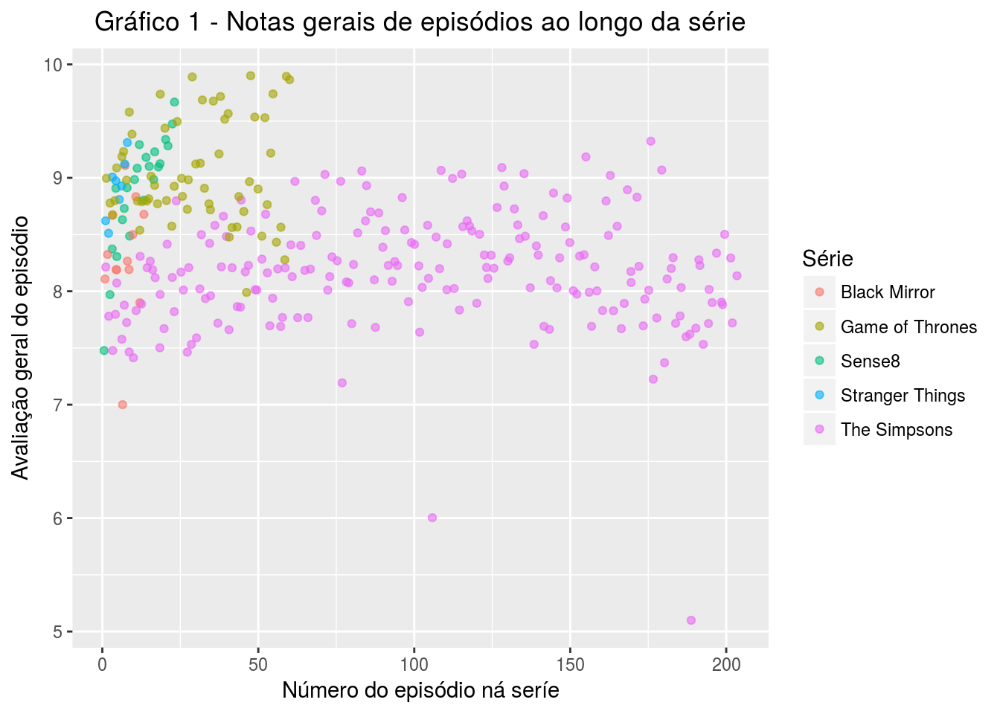
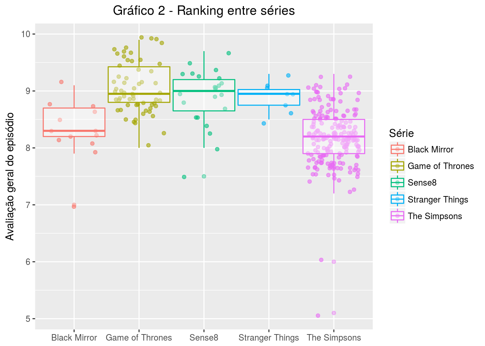
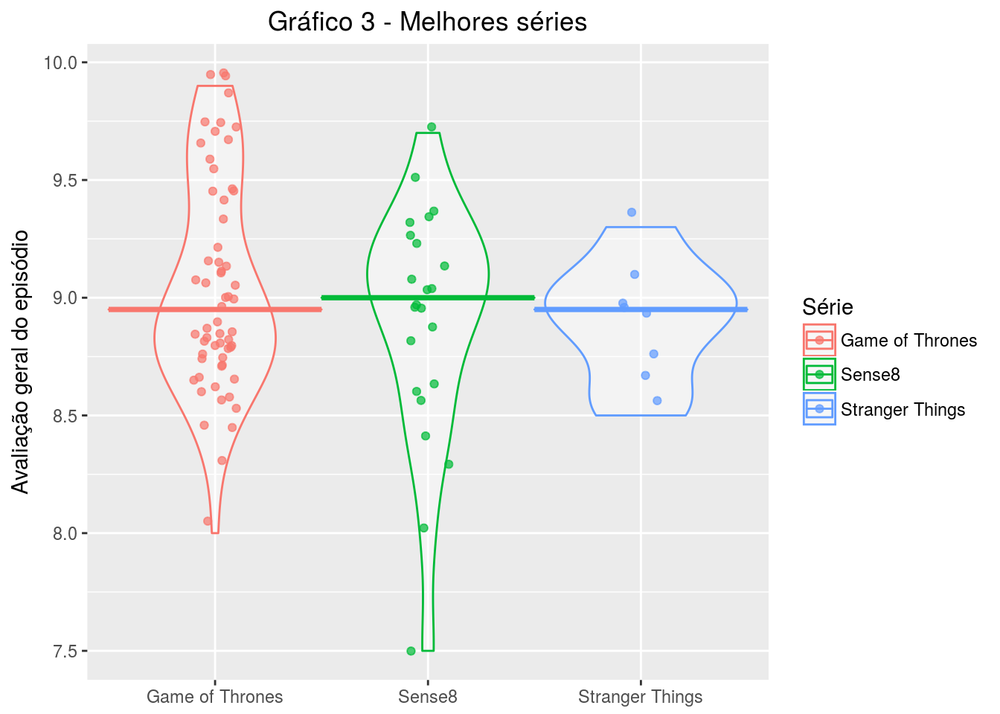
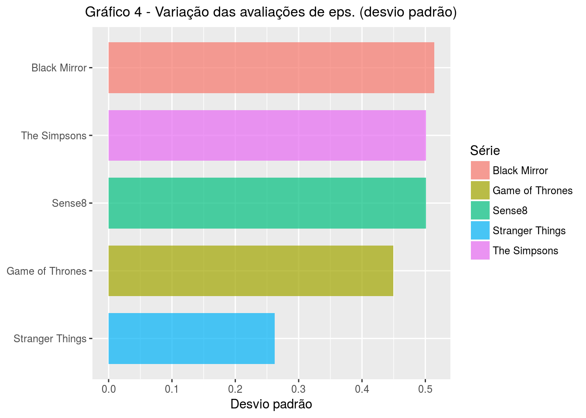
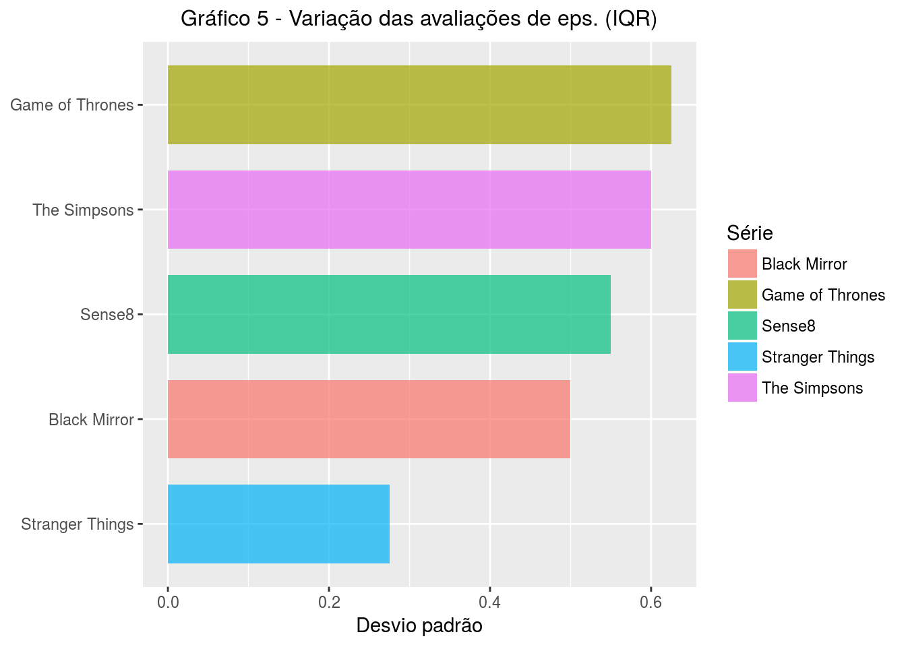
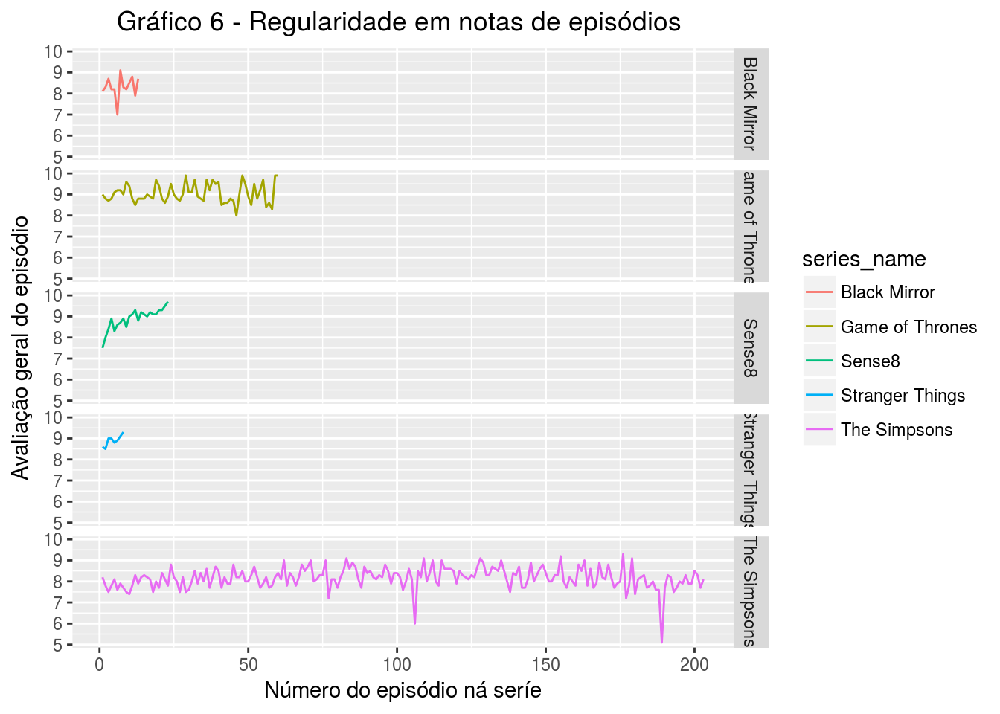

Ítalo Batista
Esta análise utiliza dados de séries extraídos do IMDB. Esses dados foram organizados pelo prof. Nazareno e podem ser encontrados neste repositório.
library("tidyverse")dados = read_csv(file = here::here("data/series_from_imdb.csv"))Esses dados são referentes às avaliações que usuários deram a episódios das séries a que assistiram. Eles têm a seguinte estrutura:
VARIÁVEL EXPLICAÇÃO
* series_name <chr> Nome da série.
* series_ep <int> Número do episódio na série desde o primeiro.
* season <int> Número da temporada, começando em 1.
* season_ep <int> Número do episódio na temporada.
* url <chr> Url do IMDB para o episódio (eg "http://www.imdb.com/title/tt5174246/")
* Episode <chr> Título do episódio.
* UserRating <dbl> Avaliação geral para o episódio.
* UserVotes <dbl> Número de votos para o episódio.
* r1 <dbl> Proporção de avaliações com nota 1 dadas por usuários.
* r2 <dbl> Proporção de avaliações com nota 2 dadas por usuários.
* ...
* $ r10 <dbl> Proporção de avaliações com nota 10 dadas por usuários.Basicamente, cada episódio terá nome, série, índice na série, temporada, índice na temporada, avaliação geral, proporções de avaliações e link para o IMDB. Para esta análise, usaremos os dados das seguintes séries, em que (a falta de) critério foi o gosto pessoal:
dados = dados %>%
filter(series_name %in% c("Black Mirror", "Game of Thrones", "Stranger Things", "Sense8", "The Simpsons"))É preciso filtrar os dados da série The Simpsons para pegar apenas os episódios anteriores ao episódio número 204, pois a partir deste episódio o número da temporada está calculado errado na base de dados usada. Desse modo, estaremos analisando a série The Simpsons apenas até a sua nona temporada.
dados = dados %>% filter(series_ep < 204)Antes de começarmos a analisar os dados, é interessante saber como os dados se comportam, a fim de verificar se há existência de valores mais diferentes ou muito dispersos ou muito frequentes. Para tanto, iremos plotar um gráfico de pontos, a fim de fazer a verificação visualmente.
dados %>%
mutate(Série = as.character(series_name)) %>%
ggplot(mapping = aes(x = series_ep, y = UserRating, color = Série)) +
geom_jitter(alpha = .6, width = .5) +
xlab("Número do episódio ná seríe") +
ylab("Avaliação geral do episódio") +
ggtitle("Gráfico 1 - Notas gerais de episódios ao longo da série") +
theme(plot.title = element_text(hjust = 0.5))
O aspecto visual que mais chama a atenção neste gráfico é que The Simpsons parece trilhar um caminho próprio no quesito comportamento. Esta série tem um número de episódios muito superior ao das outras séries, além da seus episódios terem, em geral, uma nota de avaliação variando bastante entre 7 e 9.5, com apenas um ou outro episódio de nota inferior a sete. As outras séries parecem variar um pouco menos entre si. Além disso, juntas elas concentram uma maioria de avaliações acima de 8. São mais de 100 episódios se somados, dos quais apenas aproximadamente cinco estão abaixo de 8.0. Já em The Simpsons são pouco mais de 200 episódios, em que um boa parte está abaixo de uma avaliação de 8 pontos.
Vamos investigar esses aspectos mais de perto.
Utilizando a avaliação geral por episódio calculada pelo IMDB, podemos discutir os seguintes pontos:
dados %>%
mutate(Série = as.character(series_name)) %>%
ggplot( aes(x = Série, y = UserRating, color = Série)) +
geom_jitter(width = .4, height = .07, alpha = .6) +
geom_boxplot(alpha = .4, width = 0.95) +
theme(axis.title.x=element_blank()) +
ylab("Avaliação geral do episódio") +
ggtitle("Gráfico 2 - Ranking entre séries") +
theme(plot.title = element_text(hjust = 0.5))
No gráfico acima, as linhas horizontais identificam as medianas das avaliaçãos para episódios agrupadas por série. Uma mediana basicamente é o valor central que divide os valores maiores dos menores; no nosso caso, agrupa 50% dos episódios acima e 50% abaixo. Desse modo, a partir deste gráfico, identificamos que Game of Thrones (GoT), Sense8 e Stranger Things competem entre as melhores, pois 50% dos episódios dessas séries são melhor avaliados que a maioria dos episódios de Black Mirror e de The Simpsons.
Vamos analisar mais de perto os dados das séries que concorrem em primeiro:
dados %>%
mutate(Série = as.character(series_name)) %>%
filter(series_name %in% c("Game of Thrones", "Stranger Things", "Sense8")) %>%
ggplot( aes(x = Série, y = UserRating, color = Série)) +
geom_violin(alpha = .4) +
geom_jitter(width = .1, height = .07, alpha = .7) +
stat_summary(fun.y = median, fun.ymin = median, fun.ymax = median, geom = "crossbar", width = 1) +
ylab("Avaliação geral do episódio") +
ggtitle("Gráfico 3 - Melhores séries") +
theme(plot.title = element_text(hjust = 0.5)) +
theme(axis.title.x=element_blank())
Sense8 parece ser um pouco melhor avaliada que as outras séries, já que sua mediana está num nível ligeiramente acima. Contudo, pela diferença ser tão pequena, isso não é suficiente para fazer Sense8 ser a melhor série.
Algo bastante significativo é o fato de Got ter um número considerável de episódios avaliados acima de 9.5, com 4 avaliados em quase 10 (9.9), enquanto Sense8 tem um número menor de episódios avaliados acima de 9.5. Além disso, a menor avaliação de Got é 8, enquanto em Sense8 a menor avaliação é 7.5.
Importa aqui dizer que GoT tem um número de episódios maior que o dobro do número de episódios de Sense8 e Stranger Things, o que talvez tornasse injusto dar-lhe o crédito de melhor série entre as cinco levadas em conta nesta análise. Todavia, pelos gráficos, constatamos que GoT tem um comportamento mais harmônico (no sentido de que sempre foi muito bem avaliada), com notas sempre altas, demonstrando que sempre agradou o público. É verdade que Stranger Things, cuja menor avaliação geral para um episódio é 8.5, também agradou muito ao público, mas não chegou a alcançar notas tão altas quanto GoT.
Para responder a essa pergunta, iremos trabalhar com um conceito chamado desvio padrão, um parâmetro muito usado em estatística que indica o grau de variação de um conjunto de elementos. No nosso caso, usaremos o desvio padrão para indicar o grau de varição das avaliações dos episódios de uma série. Portanto, quanto maior o desvio padrão, maior será a irregularidade entre as notas dos episódios de uma série — ou seja, as notas variam muito de um episódio para outro.
dados.dp <- dados %>%
mutate(Série = as.character(series_name)) %>%
group_by(Série) %>%
summarise(dp = sd(UserRating))
dados.dp %>%
ggplot(aes(x = reorder(Série, dp), y = dp, fill = Série)) +
geom_bar(stat = "identity", alpha = .7, width = .75) +
ggtitle("Gráfico 4 - Variação das avaliações de eps. (desvio padrão)") +
ylab("Desvio padrão") +
theme(plot.title = element_text(hjust = .5, size = 12)) +
theme(axis.title.y=element_blank()) +
coord_flip() 
Pelo gráfico, vemos que Black Mirror é a série com maior desvio padrão. A variação das notas para The Simpsons e Sense8 não está muito atrás de Black Mirror. É interessante notar que pela grande quantidade de episódios em The Simpsons, a dispersão geral das notas de seus episódios se aproxima da dispersão das outras duas séries. Levando isto em considerão, se voltarmos ao gráfico um veremos que em Black Mirror de fato os episódios têm notas mais dispersas. Desse modo, Black Mirror, Sense8, The Simpsons e Got parecem comportar-se de modo semelhante no aspecto irregularidade de qualidade de episódios.
Por fim, desde o gráfico um já observava-se que Stranger Things tinha a menor irregularidade.
O cálculo do desvio padrão leva em consideração valores que se afastam muito da média do conjunto de elementos. Portanto, se houver valores muito extremos nos dados, o desvio padrão será influenciado por eles, não focando onde a maioria dos valores estão concentrados.
No sentido de evitar tal comportamento, existe um cálculo chamado IQR ou distância interquartil, que pouco varia indepentende da existências de valores muito extremos.
Para melhor entender esse cálculo, deve-se saber que um quartil é qualquer um dos três valores do conjunto que divide os dados, se ordenados, em quatro partes iguais, em que cada parte representa 1/4 da amostra. O primeiro quartil é o valor aos 25% da amostra ordenada. O segundo, o valor até o qual se encontra 50% da amostra ordenada. O terceiro, ou quartil superior, valor a partir do qual se encontram 25% dos valores mais elevados. No gráfico dois a região entre o primeiro e o terceiro quartil é representada pela caixa branca.
O IQR é calculado levando em consideração a diferença entre o terceiro e primeiro quartil, ou seja, os 50% de valores mais concentrados.
dados.iqr <- dados %>%
mutate(Série = as.character(series_name)) %>%
group_by(Série) %>%
summarise(dp = IQR(UserRating))
dados.iqr %>%
ggplot(aes(x = reorder(Série, dp), y = dp, fill = Série)) +
geom_bar(stat = "identity", alpha = .7, width = .75) +
ggtitle("Gráfico 5 - Variação das avaliações de eps. (IQR)") +
ylab("Desvio padrão") +
theme(plot.title = element_text(hjust = .5, size = 12)) +
theme(axis.title.y=element_blank()) +
coord_flip() 
Por este gráfico, assim como pelo anterior, vemos que Black Mirror, Sense8, The Simpsons e GoT comportam-se de modo parecido, pois não é grande a diferença entre o IQR das 4. O grande destaque de novo é Stranger Things, e concluímos, portanto, que esta série se destaca das outras por manter uma regularidade na boa qualidade de seus episódios.
Podemos ainda plotar outro gráfico, que nos ajude a visualizar melhor a regularidade.
dados %>%
ggplot(aes(x = series_ep, y = UserRating, color = series_name)) +
geom_line() +
scale_y_continuous() +
facet_grid(series_name ~ .) +
xlab("Número do episódio ná seríe") +
ylab("Avaliação geral do episódio") +
ggtitle("Gráfico 6 - Regularidade em notas de episódios ") +
theme(plot.title = element_text(hjust = 0.5))
Novamente, o destaque é para Stranger Things, pela regularidade de sua qualidade.
GoT e Black Mirror de fato apresentam variações mais representativas, enquanto em The Simpsons a irregularidade é mais tênue, exceto por um ou outro caso.
Interessante é ver como Sense8 começa com uma avaliação muito abaixo da média e a partir de então começa a variar pouquíssimo, mas sempre em sentido crescente.
Apesar de estar entre as de maior irregularidade, GoT ainda assim está entre as melhores séries, pois suas notas variam entre valores muito altos, de 8 a 9.9.